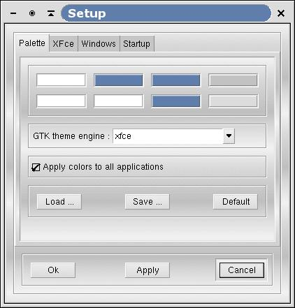

As stated before, XFce is very intuitive. All customization can be performed through its graphical user interface. For this purpose XFce provides a setup dialog with 4 tabfolders :
Palette
XFce
Windows
Startup

Figure 3-1. Palette tabfolder
Since XFce is based on the popular GTK+ toolkit, it uses the .gtkrc style hidden configuration file located in the user's home directory. This enables all GTK+ applications to share the same color scheme.
While .gtkrc is usually copied from a theme or written by hand, XFce is able to automatically generate the .gtkrc file from the color values and font selected by the user in the palette setup screen.
XFce is able to determine whether the .gtkrc file is customized by the user or not. If one wants to build his own .gtkrc style or if one uses a style from GNOME Control Center (gnomecc), XFce won't override it (as a result, if you curently have a .gtkrc file in your home directory and you want XFce to manage the style for you, you should remove or rename your current ~/.gtkrc file). But if there is no .gtkrc file in user's home directory or if it is empty, XFce will generate a .gtkrc file so all GTK+ applications, including GNOME applications, will share exactly the same look.
A palette, from XFce's point of view, is made of 8 colors and a font name. Each color is used to display specific items in the XFce desktop, like the mouse pointer, the default window background, the text fields, etc. The color you select for this palette are shared by all XFce aware applications (XFTree, XFClock,XFwm, etc.).
By clicking on one of the colors, you can change it using the color selector. The palette can be saved to disk using the "Save..." button. You can retrieve it later using the "Load..." button. You don't necessarily need to save your palette to disk unless you want to share it with other users. The current palette is automatically saved to a file in the user's home directory so that XFce will have the same color scheme when you restart it.
In this tabfolder you can also choose a GTK engine to use. XFce can try to make other application use the xfce color scheme. You can activate this by selecting the option "apply colors to all applications".
The font used for displaying text in XFce is selected in the XFce tabfolder.